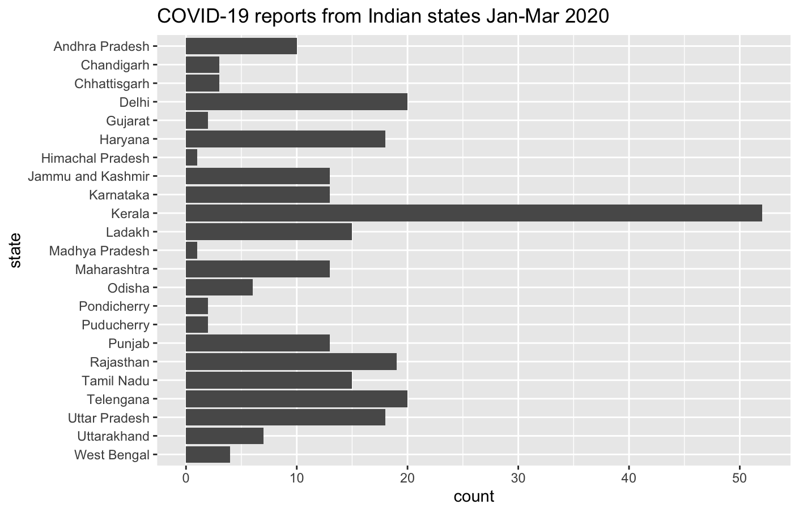
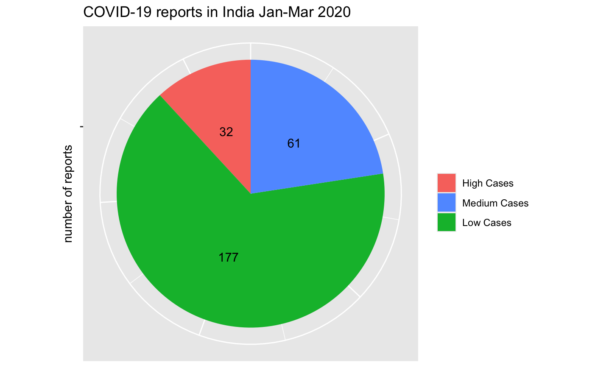
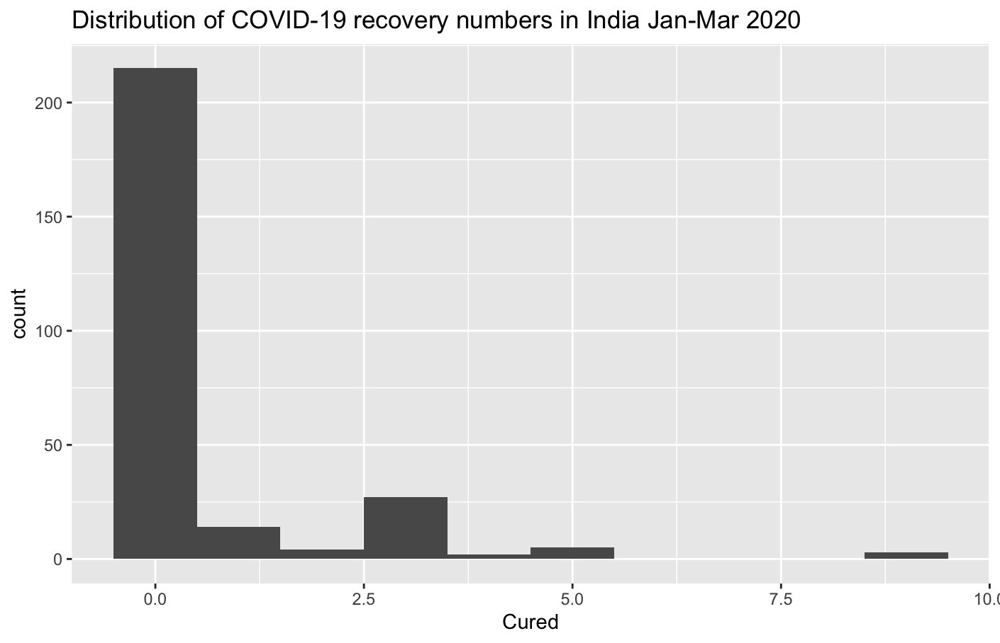
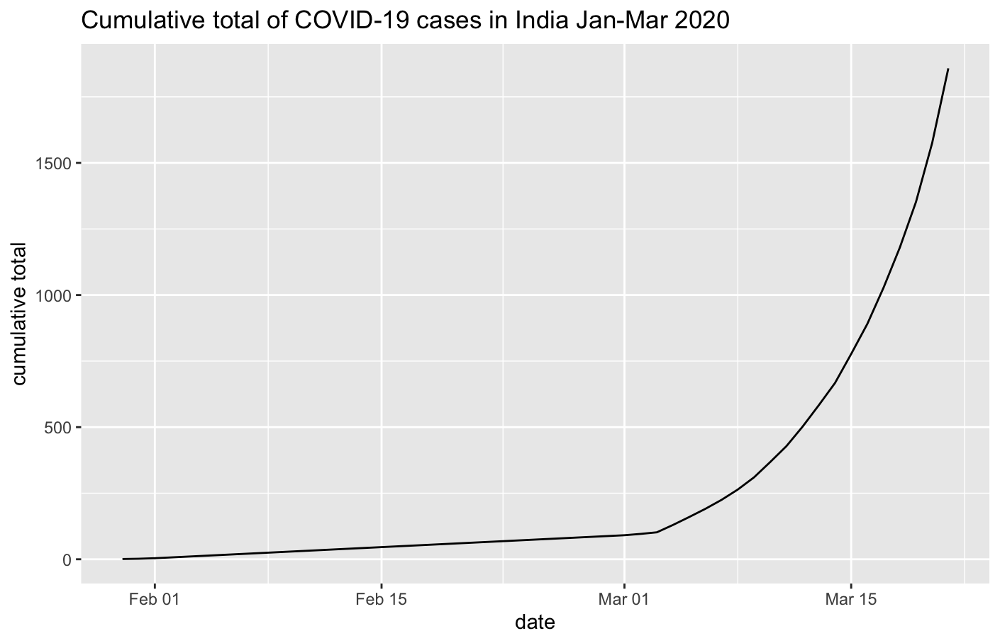

Our task was to analyse coronavirus recovery data from India from January 2020 to March 2020 using RStudio.
The data came from here on Kaggle. Here's a sample of the data. (There are actually 270 rows.)
| Sno | Date | State/UnionTerritory | ConfirmedIndianNational | ConfirmedForeignNational | Cured | Deaths |
|---|---|---|---|---|---|---|
| 1 | 30-01-2020 | Kerala | 1 | 0 | 0 | 0 |
| 2 | 31-01-2020 | Kerala | 1 | 0 | 0 | 0 |
| 3 | 01-02-2020 | Kerala | 2 | 0 | 0 | 0 |
| 4 | 02-02-2020 | Kerala | 3 | 0 | 0 | 0 |
| 5 | 03-02-2020 | Kerala | 3 | 0 | 0 | 0 |
First I created a frequency table to count how many daily reports came from each state.
table(Covid19_India_Jan_20_Mar_20_$`State/UnionTerritory`)
Here are the first few results.
| State/UnionTerritory | Freq |
|---|---|
| Andhra Pradesh | 10 |
| Chandigarh | 1 |
| Chattisgarh | 1 |
| Chhattisgarh | 2 |
| Delhi | 20 |
The results show that the states weren't named consistently, for example "Chhattisgarh" was named "Chattisgarh" in one record. I browsed the other records and saw that Union territories were also not named consistently, for example, "Ladakh" was sometimes named "Union Territory of Ladakh".
I used this R code to tidy the data.
library(dplyr) #rename any states named "Chattisgarh" Covid19_India_Jan_20_Mar_20_$`State/UnionTerritory` <- which(Covid19_India_Jan_20_Mar_20_$`State/UnionTerritory` == "Chattisgarh") %>% replace(Covid19_India_Jan_20_Mar_20_$`State/UnionTerritory`, ., "Chhattisgarh") #get row numbers of states starting with "Union Territory of " ut <- which(substr(Covid19_India_Jan_20_Mar_20_$`State/UnionTerritory`, 1, 19) == "Union Territory of ") #remove "Union Territory of " from the start of any state names Covid19_India_Jan_20_Mar_20_$`State/UnionTerritory`[ut] <- substr(Covid19_India_Jan_20_Mar_20_$`State/UnionTerritory`[ut], 20, nchar(Covid19_India_Jan_20_Mar_20_$`State/UnionTerritory`[ut]))
I created the frequency table again with the corrected data.
table(Covid19_India_Jan_20_Mar_20_$`State/UnionTerritory`)
Here are the first few results.
| State/UnionTerritory | Freq |
|---|---|
| Andhra Pradesh | 10 |
| Chandigarh | 1 |
| Chhattisgarh | 3 |
| Delhi | 20 |
| Gujarat | 2 |
I put the results in descending order to see which states appeared most frequently.
table(Covid19_India_Jan_20_Mar_20_$`State/UnionTerritory`) %>% as.data.frame() %>% arrange(desc(Freq))
Here are the first ten results.
| State/UnionTerritory | Freq |
|---|---|
| Kerala | 52 |
| Delhi | 20 |
| Telengana | 20 |
| Rajasthan | 19 |
| Haryana | 18 |
| Uttar Pradesh | 18 |
| Ladakh | 15 |
| Tamil Nadu | 15 |
| Jammu and Kashmir | 13 |
| Karnataka | 13 |
I wanted to find the range of dates, but the Date column was "character" data type, so I made a new column date_converted with "Date" data type, then found the difference between the first and last dates.
Covid19_India_Jan_20_Mar_20_$date_converted <- as.Date(Covid19_India_Jan_20_Mar_20_$Date, format = "%d-%m-%Y") max(Covid19_India_Jan_20_Mar_20_$date_converted) - min(Covid19_India_Jan_20_Mar_20_$date_converted) Time difference of 51 days
I created a frequency table to count how many daily reports showed recoveries during this period.
table(Covid19_India_Jan_20_Mar_20_$Cured == 0) FALSE TRUE 55 215
I also checked this produced the opposite result if I used Cured > 0.
table(Covid19_India_Jan_20_Mar_20_$Cured > 0) FALSE TRUE 215 55
I turned the results into percentages.
table(Covid19_India_Jan_20_Mar_20_$Cured == 0)/nrow(Covid19_India_Jan_20_Mar_20_) * 100 FALSE TRUE 20.37037 79.62963
I added a variable has_recovery that indicates whether any recoveries were reported.
Covid19_India_Jan_20_Mar_20_$has_recovery <- Covid19_India_Jan_20_Mar_20_$Cured > 0
| Sno | Date | State/UnionTerritory | ConfirmedIndianNational | ConfirmedForeignNational | Cured | Deaths | has_recovery |
|---|---|---|---|---|---|---|---|
| 1 | 30-01-2020 | Kerala | 1 | 0 | 0 | 0 | FALSE |
| 2 | 31-01-2020 | Kerala | 1 | 0 | 0 | 0 | FALSE |
| 3 | 01-02-2020 | Kerala | 2 | 0 | 0 | 0 | FALSE |
| 4 | 02-02-2020 | Kerala | 3 | 0 | 0 | 0 | FALSE |
| 5 | 03-02-2020 | Kerala | 3 | 0 | 0 | 0 | FALSE |
I added another variable has_deaths that indicates whether any deaths were reported.
Covid19_India_Jan_20_Mar_20_$has_deaths <- Covid19_India_Jan_20_Mar_20_$Deaths > 0
| Sno | Date | State/UnionTerritory | ConfirmedIndianNational | ConfirmedForeignNational | Cured | Deaths | has_recovery | has_deaths |
|---|---|---|---|---|---|---|---|---|
| 1 | 30-01-2020 | Kerala | 1 | 0 | 0 | 0 | FALSE | FALSE |
| 2 | 31-01-2020 | Kerala | 1 | 0 | 0 | 0 | FALSE | FALSE |
| 3 | 01-02-2020 | Kerala | 2 | 0 | 0 | 0 | FALSE | FALSE |
| 4 | 02-02-2020 | Kerala | 3 | 0 | 0 | 0 | FALSE | FALSE |
| 5 | 03-02-2020 | Kerala | 3 | 0 | 0 | 0 | FALSE | FALSE |
I created a frequency table to count how many daily reports showed deaths during this period.
table(Covid19_India_Jan_20_Mar_20_$has_deaths) FALSE TRUE 245 25
I converted the has_deaths variable to a "factor" variable has_deaths_factor with labels "No Deaths" and "Deaths Reported".
Covid19_India_Jan_20_Mar_20_$has_deaths_factor <- factor(Covid19_India_Jan_20_Mar_20_$has_deaths, labels = c("No Deaths", "Deaths Reported"))
| Sno | Date | State/UnionTerritory | ConfirmedIndianNational | ConfirmedForeignNational | Cured | Deaths | has_recovery | has_deaths | has_deaths_factor |
|---|---|---|---|---|---|---|---|---|---|
| 1 | 30-01-2020 | Kerala | 1 | 0 | 0 | 0 | FALSE | FALSE | No Deaths |
| 2 | 31-01-2020 | Kerala | 1 | 0 | 0 | 0 | FALSE | FALSE | No Deaths |
| 3 | 01-02-2020 | Kerala | 2 | 0 | 0 | 0 | FALSE | FALSE | No Deaths |
| 4 | 02-02-2020 | Kerala | 3 | 0 | 0 | 0 | FALSE | FALSE | No Deaths |
| 5 | 03-02-2020 | Kerala | 3 | 0 | 0 | 0 | FALSE | FALSE | No Deaths |
Finally I created a "categorical" variable case_level based on total confirmed cases - Indian nationals and foreign nationals.
0 total cases: "No Cases"
1-5 total cases: "Low Cases"
6-15 total cases: "Medium Cases"
16+ total cases: "High Cases"
Covid19_India_Jan_20_Mar_20_$case_level <- as.factor(ifelse(Covid19_India_Jan_20_Mar_20_$ConfirmedIndianNational + Covid19_India_Jan_20_Mar_20_$ConfirmedForeignNational < 1, "No Cases",
ifelse(Covid19_India_Jan_20_Mar_20_$ConfirmedIndianNational + Covid19_India_Jan_20_Mar_20_$ConfirmedForeignNational < 6, "Low Cases",
ifelse(Covid19_India_Jan_20_Mar_20_$ConfirmedIndianNational + Covid19_India_Jan_20_Mar_20_$ConfirmedForeignNational < 16, "Medium Cases", "High Cases"))))
| Sno | Date | State/UnionTerritory | ConfirmedIndianNational | ConfirmedForeignNational | Cured | Deaths | has_recovery | has_deaths | has_deaths_factor | case_level |
|---|---|---|---|---|---|---|---|---|---|---|
| 1 | 30-01-2020 | Kerala | 1 | 0 | 0 | 0 | FALSE | FALSE | No Deaths | Low Cases |
| 2 | 31-01-2020 | Kerala | 1 | 0 | 0 | 0 | FALSE | FALSE | No Deaths | Low Cases |
| 3 | 01-02-2020 | Kerala | 2 | 0 | 0 | 0 | FALSE | FALSE | No Deaths | Low Cases |
| 4 | 02-02-2020 | Kerala | 3 | 0 | 0 | 0 | FALSE | FALSE | No Deaths | Low Cases |
| 5 | 03-02-2020 | Kerala | 3 | 0 | 0 | 0 | FALSE | FALSE | No Deaths | Low Cases |
I made a bar chart showing the frequency of COVID-19 reports by state.
Covid19_India_Jan_20_Mar_20_ %>% ggplot(aes(y = fct_rev(`State/UnionTerritory`))) + geom_bar() + labs(y = "state", title = "COVID-19 reports from Indian states Jan-Mar 2020")

I made a pie chart showing the distribution of case severity levels, using total cases of Indian nationals and foreign nationals.
Covid19_India_Jan_20_Mar_20_ %>%
group_by(case_level) %>%
summarise(count = n()) %>%
ggplot(aes(x = "", y = count, fill = case_level)) +
geom_col() +
coord_polar(theta = "y") +
geom_text(aes(label = count), position = position_stack(vjust = .5)) +
labs(x = "", y = "", fill = "", title = "COVID-19 reports in India Jan-Mar 2020") +
scale_fill_discrete(breaks = c("High Cases", "Medium Cases", "Low Cases")) +
theme(axis.text.x = element_blank())

I made a histogram showing the distribution of recovery numbers.
Covid19_India_Jan_20_Mar_20_ %>% ggplot(aes(Cured)) + geom_histogram(bins = 10) + labs(title = "Distribution of COVID-19 recovery numbers in India Jan-Mar 2020")

I made a line chart showing the trend of total cases over time.
Covid19_India_Jan_20_Mar_20_ %>% arrange(date_converted) %>% group_by(date_converted) %>% summarise(total_cases = sum(ConfirmedIndianNational + ConfirmedForeignNational)) %>% mutate(cum_sum = cumsum(total_cases)) %>% ggplot(aes(date_converted, cum_sum)) + geom_line() + labs(title = "Cumulative total of COVID-19 cases in India Jan-Mar 2020", x = "date", y = "cumulative total")

I made a list of states showing total number of cases (Indian nationals and foreign nationals) in order from highest to lowest.
Covid19_India_Jan_20_Mar_20_ %>% group_by(`State/UnionTerritory`) %>% summarise(total_cases = sum(ConfirmedIndianNational + ConfirmedForeignNational)) %>% arrange(desc(total_cases))
Here are the first ten results.
| State/UnionTerritory | total_cases |
|---|---|
| Kerala | 406 |
| Maharashtra | 355 |
| Uttar Pradesh | 214 |
| Haryana | 181 |
| Rajasthan | 175 |
| Delhi | 133 |
| Karnataka | 103 |
| Telengana | 74 |
| Ladakh | 71 |
| Jammu and Kashmir | 30 |
I made the same list again, but added the total number cured.
Covid19_India_Jan_20_Mar_20_ %>% group_by(`State/UnionTerritory`) %>% summarise(total_cases = sum(ConfirmedIndianNational + ConfirmedForeignNational), total_cured = sum(Cured)) %>% arrange(desc(total_cases))
Here are the first ten results.
| State/UnionTerritory | total_cases | total_cured |
|---|---|---|
| Kerala | 406 | 57 |
| Maharashtra | 355 | 0 |
| Uttar Pradesh | 214 | 50 |
| Haryana | 181 | 0 |
| Rajasthan | 175 | 22 |
| Delhi | 133 | 22 |
| Karnataka | 103 | 2 |
| Telengana | 74 | 7 |
| Ladakh | 71 | 0 |
| Jammu and Kashmir | 30 | 0 |
We used the data to calculate probabilities using Bayes Theorem.
| the probability that a randomly selected report comes from Kerala | |
| the probability that a randomly selected report shows recoveries | |
| the probability that a Kerala report shows recoveries | |
| the probability that a Delhi report shows recoveries | |
| if a report shows recoveries, the probability that it came from Kerala |
Working through these activities really helped me apply what I've learned about RStudio, and I'm sure I'll be using RStudio a lot in my career as a data scientist!